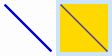
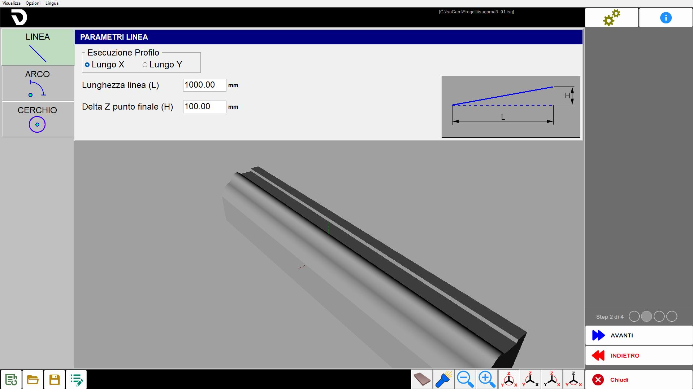
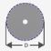
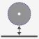
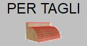
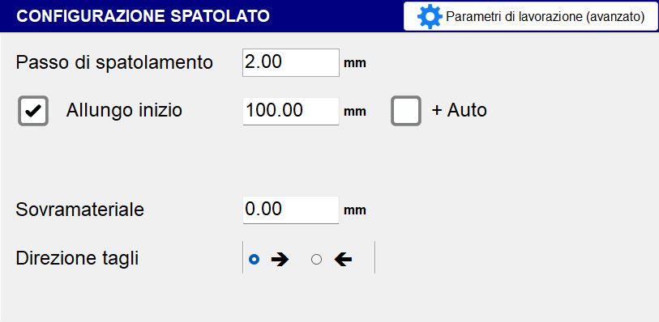
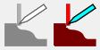
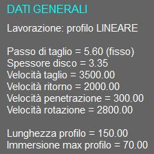
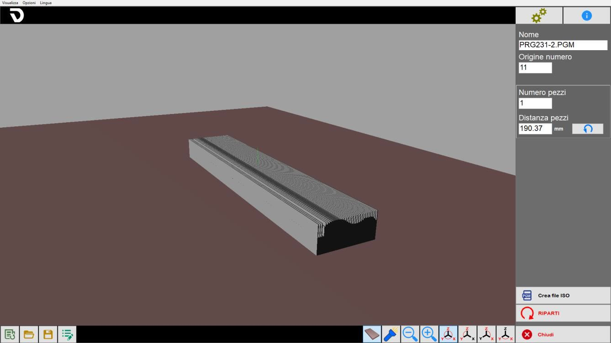

IsoCam ist die Software zur Ausführung von Konturbearbeitungen mit der Scheibe; sie ermöglicht das Zeichnen oder Importieren von Konturen, die Festlegung des Profils und die Anwendung verschiedener Bearbeitungsarten.
Die Verwaltung der Arbeitsprogrammierung ist in mehrere Phasen unterteilt, die in den folgenden Abschnitten beschrieben werden.
Wenn beim Öffnen des Programms Isocam keine zuvor erstellte Bearbeitung vorhanden ist, kann der Bediener eine neue Bearbeitung ab dem ersten Bearbeitungsschritt erstellen.
Ist hingegen eine zuvor erstellte Bearbeitung vorhanden, wird sie automatisch geladen und der Bediener erhält direkten Zugriff auf den letzten Bearbeitungsschritt:

Gemeinsame Elemente der verschiedenen Schritte
Die Benutzeroberfläche besteht aus mehreren Bereichen.
Menü: Schnellfunktionen.
Obere Leiste: spezifische Funktionen der aktiven Seite.
Mittlerer Bereich: enthält je nach Seite die Zeichnung oder den aktiven Bereich.
Seitenleiste: Fenster mit den zu ändernden Parametern.
Untere Leiste: Schaltflächen, die im Allgemeinen in mehreren Bereichen der Software gültig sind.
Die folgenden Elemente bleiben unabhängig von der aktuellen Prozessphase immer sichtbar.
Menü
Die Menüleiste befindet sich oben über allen anderen Elementen dieser Benutzeroberfläche.
Ansicht | Dem Bediener stehen einige Einstellungen zur Sichtbarkeit der Werkstücke im Arbeitsbereich zur Verfügung. |
Optionen | Es können Einstellungen zu den Farben geändert werden. |
Sprache | ISOCAM ist derzeit in folgenden Sprachen verfügbar:
|
Rechte Seitenleiste
 | Einstellungen |
 | Info |
 | Schrittverwaltung |
 | Schließen |
Einstellungen
Mit diesem Bedienfeld kann in den erweiterten Modus von IsoCam gewechselt, zur Basisversion zurückgekehrt und die Werte für den Rasterschritt in X und Y geändert werden.

Untere Leiste
 | Neue Bearbeitung |
 | Bearbeitung öffnen |
 | Bearbeitung speichern |
 | Bearbeitung ändern |
Querschnitt zeichnen (Schritt 1 von 4)
Die erste Programmierphase besteht im Zeichnen des zu bearbeitenden Querschnitts. Das Fenster bietet die typischen Befehle einer CAD-Software: Linie zeichnen, Bogen zeichnen, Snap, verschieben usw.
Das Grundkonzept der Software besteht darin, den Querschnitt als schnelle Skizze zu erstellen, die anschließend mit den entsprechenden Befehlen Element für Element bearbeitet wird. Die Möglichkeit zum Import von .dxf-Zeichnungen aus externen CAD-Systemen bleibt jederzeit verfügbar.

Obere Leiste

 | Befehl Linie zeichnen |
 | Befehl Bogen zeichnen |
 | Ausgewählte Segmente verschieben |
 | Spiegelbild |
 | Ausrunden |
 | Aktive Auswahl umkehren |
 | Ausgewählte Segmente löschen |
Rechte Seitenleiste
Linieneigenschaften
Wenn eine Linie im Arbeitsbereich ausgewählt wird, wird die rechte Seitenleiste aktualisiert und zeigt die Eigenschaften des ausgewählten Elements an, die vom Benutzer geändert werden können:
Länge | Gibt den linearen Abstand zwischen den beiden Endpunkten der ausgewählten Linie an, berechnet anhand der Koordinaten im Arbeitsbereich. |
Winkel | Gibt die Ausrichtung der Linie relativ zur horizontalen Achse des Bezugssystems an. |
Δx | Gibt die Änderung der X-Koordinate zwischen dem Start- und Endpunkt einer Linie oder eines Elements an, also den horizontal zurückgelegten Abstand relativ zur X-Achse des Bezugssystems. |
Δy | Gibt die Änderung der Y-Koordinate zwischen dem Start- und Endpunkt einer Linie oder eines Elements an, also den vertikal zurückgelegten Abstand relativ zur Y-Achse des Bezugssystems. |
 | Ausgewählte Linie verlängern/verkürzen |
 | Winkel annähern |
Verbundene Segmente skalieren | Ermöglicht eine proportionale Skalierung aller Elemente, die direkt oder indirekt mit der ausgewählten Linie verbunden sind. |
Bogeneigenschaften
Wenn ein Bogen im Arbeitsbereich ausgewählt wird, wird die rechte Seitenleiste aktualisiert und zeigt die Eigenschaften des ausgewählten Elements an, die vom Benutzer geändert werden können.
Der Bogen kann auf verschiedene Arten definiert werden: über Punkte, als Mittelpunkt, Radius und Bogen usw.
Die verschiedenen Eigenschaften werden in dem rechts eingeblendeten Fenster angezeigt.
Die Änderung bestimmter Eigenschaften kann auf unterschiedliche Weise erfüllt werden, beispielsweise durch Ändern des Radius oder des Start-/Endpunkts; zur Festlegung der Änderungsart dient die Option „Mittelpunkt fest“.
Radius | Gibt den konstanten Abstand zwischen dem Mittelpunkt einer Kreislinie oder eines Bogens und jedem Punkt auf deren Umfang an. |
Start-/Endwinkel | Winkel des Start- oder Endpunkts relativ zum Mittelpunkt. |
Tangente Vorh. / Nächste | Ändert den Start- oder Endwinkel so, dass der Bogen tangential zum vorherigen oder nächsten Element verläuft. |
Mittelpunkt fest | Ermöglicht festzulegen, welche Auswirkungen eine Änderung (Radius oder Winkel) hat. |
Auswahl verschieben / bewegen
Beim Aktivieren des Befehls „Verschieben“ erscheint das Fenster mit den Bewegungsparametern. Die Bewegung kann direkt durch Anklicken des Zeichenbereichs (auch bei aktiven Snaps) oder durch Eingabe der Parameter ausgeführt werden.
Das Verschieben muss mit der Schaltfläche „OK“ bestätigt werden.
 | Positionswähler |
 | Verschiebung |
Kopie verschieben | Wenn aktiviert, erstellt die Funktion eine Kopie des ausgewählten Elements und wendet die Verschiebung nur auf diese Kopie an; das Originalelement bleibt unverändert. |
Spiegeln
Nach Aktivierung des Befehls muss der Symmetriemittelpunkt durch Anklicken des Arbeitsbereichs oder Eingabe der Koordinaten festgelegt, die Spiegelrichtung ausgewählt und anschließend mit „OK“ bestätigt werden.
Symmetriemittelpunkt | Ermöglicht das Ändern der Koordinaten des Symmetriemittelpunkts, der für die horizontale oder vertikale Spiegelung des ausgewählten Elements verwendet wird. |
Zu invertierende Koordinaten | Gibt an, ob horizontal, vertikal oder in beide Richtungen gespiegelt werden soll. |
Kopie spiegeln | Wenn aktiviert, wird beim Spiegeln eine gespiegelte Kopie des ausgewählten Elements erstellt; das Original bleibt unverändert. |
Ausrunden
Eine erste Meldung in der rechten Spalte ermöglicht dem Bediener, den Ausrundungsradius einzustellen und die Auswahl zu bestätigen.

Eine zweite Meldung informiert den Bediener darüber, dass nun Ausrundungen zwischen zwei Linien eingefügt werden können; dies bleibt bis zur Deaktivierung der Funktion möglich.

Nachfolgend ein Beispiel für die Anwendung von Ausrundungen auf zwei benachbarte Linien sowie auf eine an einen Bogen angrenzende Linie:

Nach Anwendung der Ausrundungen:

Untere Leiste
DXF-Datei importieren | |
 | DXF-Datei exportieren |
Änderung rückgängig machen | |
 | Snap Start/Ende |
 | Ortho-Befehl |
 | Befehl Verbundene Segmente |
 | Zeichenraster |
 | Zoom rückgängig |
 | Zoombereich auswählen |
 | Zoom zurücksetzen |
Profilauswahl (Schritt 2 von 4)
Der zuvor gezeichnete Querschnitt muss auf ein geeignetes Profil angewendet werden.
Das Profil kann linear oder bogenförmig, in der X/Y-Ebene oder auch vertikal sein; je nach Auswahl werden anschließend bestimmte Bearbeitungsmodi aktiviert oder deaktiviert. Beispielsweise kann ein Bogenprofil in der XY-Ebene nur mit vertikaler Scheibe bearbeitet werden, während für ein Bogenprofil in der XZ- oder YZ-Ebene das Gegenteil gilt.
Der Profiltyp wird über die Schaltflächen links ausgewählt. Oben in der Mitte werden die Parameter zur geometrischen Beschreibung des Profils angezeigt und unten im mittleren Bereich die Vorschau des Ergebnisses.

Mittlerer Bereich
Lineares Profil | Richtung und Länge werden eingestellt. |
Bogenprofil | Definiert werden: Richtung, Arbeitsebene, Konkavität und die geometrischen Eigenschaften. |
Kreisprofil | Wird nur außen mit horizontaler Scheibe bearbeitet. |
Parameter lineares Profil

Profilausführung | Es stehen zwei Modi zur Verfügung: „Entlang X“ und „Entlang Y“. |
Linienlänge (L) | Horizontale Länge der Basis des geneigten Segments, gemessen zwischen dem Startpunkt und dem horizontal projizierten Endpunkt. |
Delta Z Endpunkt (H) | Höhe des geneigten Segments, also die Höhendifferenz zwischen Anfang und Ende des Segments. |
Parameter Bogenprofil

Profilausführung | Auswahl zwischen „Entlang X“ und „Entlang Y“. |
Bearbeitungsausrichtung | Auswahl zwischen „Ebene XZ“ und „Ebene XY“. |
Bearbeitungsart | Auswahl zwischen „Konkav“ und „Konvex“. |
Länge (L) | Horizontaler Abstand zwischen den beiden Endpunkten des Bogens, also die Sehne, die Anfang und Ende des Bogens verbindet. |
Ausgangsradius (R) | Abstand vom Mittelpunkt des Bogens zu einem Punkt auf dem Bogen. Bestimmt die Gesammtkrümmung des Bogens. |
Vertikale Ausdehnung (H) | Maximale Höhe des Bogens relativ zur Sehne L; entspricht dem vertikalen Abstand zwischen dem höchsten Punkt des Bogens und der Sehne. |
Winkelweite (A) | Mittelpunktswinkel, der vom Bogen aufgespannt wird, in Grad. |
Das Ändern eines der folgenden Werte: „Länge“, „Ausgangsradius“, „Vertikale Ausdehnung“ oder „Winkelweite“ führt zur automatischen Neuberechnung der übrigen Parameter.
Parameter Kreisprofil

Ausgangsradius (R) | Bestimmt den Radius vom Startpunkt aus. |
Schutzhaube | Diese Option gibt an, ob sich die C-Achse während der Bearbeitung dreht (Schutzhaube aktiv) oder bei C=0_ stehen bleibt (Schutzhaube nicht vorhanden). |
Untere Leiste
 | Arbeitsflächenansicht |
 | Zusätzliche Beleuchtung |
 | Verwaltung der Standardansichten |
Bearbeitungsparameter (Schritt 3 von 4)
Die Seite ist in Bereiche mit verschiedenen Datentypen unterteilt, die für die Bearbeitung eingestellt werden müssen.

Werkzeugparameter
Der Bediener kann die Werkzeugparameter festlegen:

Bei einem neuen Projekt werden die Daten automatisch anhand des physisch installierten Werkzeugs geladen; bei einer zuvor gespeicherten Bearbeitung entsprechen die Werkzeugdaten den bereits im vorherigen Programm gespeicherten Daten.
 | Werkzeugname |
 | Dicke |
 | Durchmesser |
 | CRF (Flanschdrehzentrum) |
 | Sicherheitshöhe |
 | RPM (Umdrehungen pro Minute) |
Bearbeitungsausrichtung

Lineares Profil
Bei linearen Profilen kann ausgewählt werden, ob die Bearbeitung mit vertikaler oder horizontaler Scheibe (von vorne oder von links) ausgeführt wird.
Vertikale Ausrichtung | Horizontale Ausrichtung |
 |  |
Bogenprofil
Bei gekrümmten Profilen ist die Ausrichtung durch den Profiltyp vorgegeben:
Bearbeitungsart | Vertikale Ausrichtung | Horizontale Ausrichtung |
Konkav |  |  |
Konvex |  |  |
Bearbeitungsart

Die Bearbeitung kann in zwei Modi ausgeführt werden:
 | Schnittmodus |
 | Glättmodus |
Konfiguration für Schnitte
Es werden zueinander parallele Schnitte ausgeführt, die dem ausgewählten Profil folgen; der Abstand zwischen den Schnitten wird aus einem Parameter übernommen.

Schritt | Gibt den Abstand zwischen der Position eines Schnitts und der des benachbarten Schnitts an. Ist er größer als die Scheibenstärke, bleibt Material zwischen den Durchgängen stehen. |
Verlängerung Anfang / Ende | Ermöglicht das Verlängern eines Schnitts am Anfang / Ende um den eingestellten Wert. |
Auto Plus | Das Aktivieren dieser Option bewirkt eine automatische Erhöhung des Verlängerungswerts auf Grundlage eines vom System festgelegten Werts. |
Aufmaß | Materialstärke, die über dem gewünschten Endprofil stehen bleiben soll. |
Schnittrichtung | Der Schnitt kann je nach ausgewählter Konfiguration von rechts nach links oder von links nach rechts ausgeführt werden. |
Glättkonfiguration
Die Bewegung erfolgt quer zur Profilrichtung und dient zur Oberflächenbearbeitung des Werkstücks.

Glättschritt | Gibt den Abstand zwischen einer Querbewegung und der nächsten entlang der Profilrichtung an. |
|---|
Geschwindigkeit und Schnittmodus
Je nach vorheriger Auswahl werden unterschiedliche Menüs zur Auswahl der für die Definition der Bearbeitung erforderlichen Parameter angezeigt.

Wenn als Bearbeitungsart die Konfiguration für Schnitte ausgewählt ist, stehen zwei Arten von Bearbeitungsparametern zur Verfügung:
 | Marmormodus |
 | Granitmodus |
Marmormodus
Allgemeine Parameter:
Schnitte in beide Richtungen (Schlichten) | Mit dieser Option kann eine Rücklaufgeschwindigkeit eingestellt werden, die von der Vorlaufgeschwindigkeit abweicht. |
Nie anheben (Schlichten) |
Geschwindigkeitsparameter:
Vorlauf | Ausführungsgeschwindigkeit des Durchgangs im Vorlauf. |
Rücklauf | Ausführungsgeschwindigkeit des Durchgangs im Rücklauf. |
Eindringen | Ausführungsgeschwindigkeit beim Eindringen des Durchgangs. |
Minimum | Wenn ein Wert ungleich null eingestellt wird, hängt die Schnittgeschwindigkeit von der Schnitttiefe ab. Bei Schnitten mit Tiefe null erfolgt die Bewegung mit Vorlaufgeschwindigkeit, bei maximaler Schnitttiefe für das ausgewählte Profil mit Mindestgeschwindigkeit. |
Granitmodus

Allgemeine Parameter:
Abtrag beim Schneiden | Materialmenge, die beim Vorwärtsdurchgang abgetragen wird. |
Abtrag im Rücklauf | Materialmenge, die beim Rückwärtsdurchgang abgetragen wird. |
Wenn als Bearbeitungsart die Glättkonfiguration ausgewählt ist, steht nur ein Bearbeitungsparameter zur Verfügung:
Geschwindigkeit - Bearbeitung | Legt die Geschwindigkeit fest, mit der die Glättbearbeitung ausgeführt wird. |
|---|
Bearbeitungsparameter (erweitert)
 | Bearbeitungsparameter (erweitert) |
Auf diesem Bildschirm können verschiedene Parameter überprüft und geändert werden, von denen viele in den Schritten 2 und 3 eingestellt wurden.

Der erste Vorgang besteht in der Auswahl des zu verwendenden Profiltyps:
 | Linear |
 | Bogenförmig |
Anschließend stehen folgende Parameter zur Verfügung:
Bearbeitung | Kann Schnitte oder Glättbearbeitung sein. |
Bearbeitungsausrichtung | Die Bearbeitung kann vertikal oder horizontal ausgeführt werden. |
Profilausführung entlang | Entlang X oder Y. |
Bearbeitungsdaten
Für das lineare Profil können folgende Parameter eingestellt werden:
Materialstärke | Definiert die Materialstärke (in mm). |
Profilneigung (mm) | Ermöglicht die Definition der Profilneigung durch Angabe des Höhenunterschieds zwischen End- und Startpunkt. |
Für das Bogenprofil stehen die in den vorherigen Schritten einstellbaren Parameter zur Verfügung.
Beide Profile haben außerdem folgende gemeinsame Bearbeitungsdaten:
Schritt | Fest in Y: hält den Abstand zwischen den Schnitten unabhängig vom darunterliegenden Profil konstant. |
Schnittrichtung | Auswahl zwischen „Y_“ und „Y-“. |
Vollständige Profilbearbeitung | Ermöglicht die Auswahl, ob das Profil vollständig bearbeitet werden soll. |
Schnitte an Winkeln erzwingen | Fügt Schnitte an Punkten mit Neigungsänderung hinzu. |
Überlappende entfernen | Wenn diese Option aktiviert ist und der Wert „Schritt“ größer als der Wert „Stärke“ ist, werden überlappende Schnitte entfernt. |
Optimierter Schritt (Färbung) % Überl. | Wenn der Wert „Schritt“ kleiner als der Wert „Stärke“ ist, wird der Schritt auf horizontalen Linien optimiert. |
Schnitt am Anfang ausführen | Ermöglicht die Auswahl, ob am Anfang des Profils ein Schnitt ausgeführt werden soll. Im danebenliegenden Feld kann die Tiefe dieses Schnitts eingestellt werden. |
Schnitt am Ende ausführen | Ermöglicht die Auswahl, ob am Ende des Profils ein Schnitt ausgeführt werden soll. Im danebenliegenden Feld kann die Tiefe dieses Schnitts eingestellt werden. |
Werkzeugdaten
Hier werden einige zuvor eingestellte Daten sowie weitere werkzeugspezifische Parameter angezeigt.

Werkzeugbeschreibung | Eine kurze Beschreibung des Werkzeugs. |
 | Werkzeugmagazin |
Positions-Nr. | Gibt die Positionsnummer des ausgewählten Werkzeugs im Magazin an. |
Korrektur-Nr. | Gibt die Nummer an, die den Namen des ausgewählten Werkzeugs identifiziert. |
Scheibenkernstärke (SA) | Stärke des zentralen tragenden Körpers der Scheibe. |
Zahnform | Der Bediener kann zwischen drei Zahnformen wählen:
|
 | Materialauswahl
|
Priorität | Es kann ein Prioritätswert festgelegt werden (zwingend positiv). |
Tiefe | Gibt die Schnitttiefe des Werkzeugs an. |
Bearbeitung (Schritt 4 von 4)
Auf Grundlage der vorherigen Auswahlen wird eine Vorschau der berechneten Schnitte angezeigt. Die Seite ist in mehrere Bereiche mit Befehlen zur Verwaltung von Änderungen unterteilt.

Nach Überprüfung der Schnitte oder Durchführung der gewünschten Änderungen die Schaltfläche „WEITER“ drücken, um die Seite zur Erzeugung des Schnittprogramms zu öffnen.
Menü
Im vierten Schritt wird im oberen Menü ein zusätzlicher Eintrag sichtbar:
Schnitte | Dieses Menü bietet dem Bediener einige Schnelleinstellungen für die erzeugten Schnitte. |
|---|
Obere Leiste
 | Schnitte erzeugen |
 | Schnittposition ändern |
 | Kopfschnitt zur Werkstücktrennung hinzufügen |
 | Endschnitt zur Werkstücktrennung hinzufügen |
 | Schnitt an Mausposition hinzufügen (Ins) |
 | Ausgewählten Schnitt löschen |
 | Schnitte vor dem ausgewählten Schnitt löschen |
 | Schnitte nach dem ausgewählten Schnitt löschen |
 | Schnittsimulation |
Mittlerer Bereich
Rechte Seitenleiste
Im vierten Schritt enthält diese Leiste folgende Informationen:
 | Fortlaufende Schnittnummer |
 | Allgemeine Daten |
 | Schnittdaten |
Untere Leiste
 | Schnittoptionen |
  | Schnitte verschieben/verlängern |
 | Shift |
Programmerstellung
Nach Abschluss der Vorbereitung im vierten Schritt kann auf die letzte Phase zugegriffen werden, die die Anzeige des erzielten Ergebnisses und die Erzeugung der ISO-Datei umfasst.
Im mittleren Bereich wird die 3D-Darstellung der erzeugten Bearbeitung unter Berücksichtigung des Bearbeitungsmodus angezeigt. Durch Anklicken des Bereichs kann die Ansicht gedreht und der Zoom gesteuert werden.

Grundverfahren
Schritt 1
Zum Starten die Schaltfläche „Neue Bearbeitung“ drücken. Sicherstellen, dass die Funktion „Verbundene Segmente“ aktiv ist, und anschließend den Befehl „Linie“ aktivieren. Durch eine Reihe von Klicks im Arbeitsbereich den gewünschten Querschnitt zeichnen. Nach Abschluss der Zeichnung erneut auf den Befehl „Linie“ klicken, um ihn zu deaktivieren. Anschließend jedes Element einzeln auswählen, um seine Parameter zu prüfen und bei Bedarf zu ändern.
Schritt 2
In diesem Schritt kann der Bediener einige grundlegende Einstellungen für die gewünschte Bearbeitungsart festlegen.
Schritt 3
Nun können Parameter zum Werkzeug sowie zu Art, Ausrichtung und Parametern der ausgewählten Bearbeitung eingestellt werden.
Im Bedienfeld „Bearbeitungsparameter (erweitert)“ kann außerdem eine Übersicht aller bis zu diesem Zeitpunkt eingestellten Parameter angezeigt werden.
Schritt 4
Für die aktuelle Bearbeitung wird automatisch eine Schnittliste erzeugt. Schnitte können je nach betrieblichen Anforderungen eingefügt, geändert und entfernt werden.
ISO-Erzeugung
Im letzten Bearbeitungsschritt kann der Bediener aus der erzeugten Bearbeitung eine ISO-Datei erstellen oder den Vorgang von vorn beginnen.